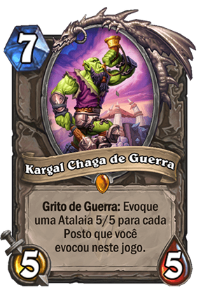
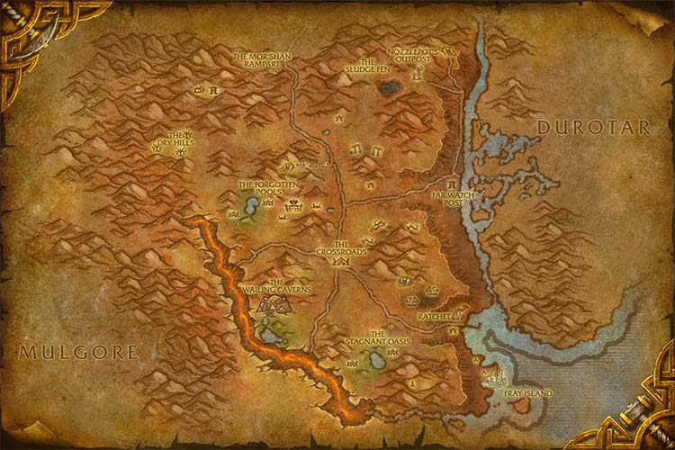
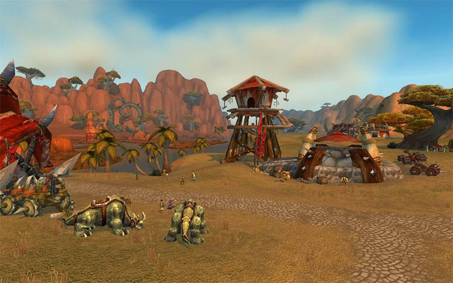
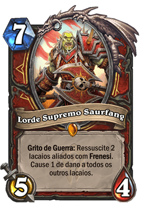

Sobre o Posto Remoto
O Posto Remoto é um card com 2 de custo 2/3 do conjunto Forjado nos Sertões da raridade comum. O seu uso se tornou menor quando este card recebeu seu primeiro nerf reduzindo 1 ponto de vida (antes era 4).
Arte do Posto Remoto, feita por Jason Kang.
Suas outras versões
O Posto Remoto possui outras versões com efeitos diversos, tais como o Posto de Mor'shan e o Posto da Encruzilhada.
A estratégia
O Posto Remoto é um lacaio forte no início do jogo. Com a moeda, ele pode ser jogada já no turno 1 e pode retardar o oponente ao decorrer do jogo. Ele tem estatísticas superiores por seu custo de mana e pode ser difícil de remover do campo de batalha.
Os postos ainda tem uma sinergia extra com o Kargal Chaga de Guerra, cujo evoca um lacaio 5/5 para cada posto invocado na partida até então.
A Lore do Posto
Como a maioria (se não todos) dos cards de Hearthstone, o Posto Remoto é inspirado em World of Warcraft, este no caso, é inspirado em um local do jogo.
O Posto Remoto é um pequeno posto avançado da Horda localizado a oeste da ponte entre Durotar e Northern Barrens. Ele contém uma torre de vigia, uma toca de orc e algumas catapultas. Um cercado de lobos montados, vigiado por um par de peões, está localizado diretamente ao sul.
Durante as invasões da Legião Ardente, o posto avançado caiu sob o controle da Legião. Vários de seus moradores foram escravizados por nathrezim e foram mortos ou resgatados pelos defensores. Sob o comando do Comandante Vil Vorgroth e da Arquimagus Velysra, a Legião lançou um ataque aos Sertões do Norte. Seu objetivo principal era tomar o coração dos Sertões, a Encruzilhada. A mesma foi defendida pelo Lord Supremo Saurfang.
O Posto Remoto caiu para a Legião quando Kargal Battlescar defendeu a ponte para Durotar.
Confira uma paródia dessa luta neste vídeo abaixo!
Para mais Lores como esta, acesse a nossa páginaLores.